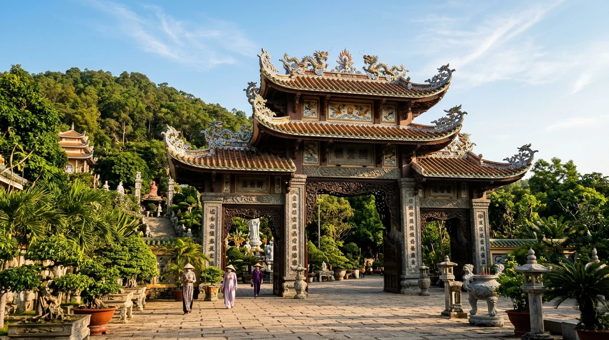

🧭 1. Tổng Quan Chùa Long Sơn & Hành Trình Hơn 135 Năm Lịch Sử
Theo sử liệu Phật giáo Khánh Hòa, chùa được Hòa thượng Thích Ngộ Trí khai sơn vào năm 1886 trên sườn núi Trại Thủy. Sau cơn bão lớn năm 1900 tàn phá gần như toàn bộ, chùa được dời xuống và xây dựng lại ngay chân núi. Vào đầu thế kỷ XX, chùa Long Sơn vinh dự là trụ sở của Hội An Nam Phật học Khánh Hòa — một trong những tổ chức tiên phong của phong trào chấn hưng Phật giáo Việt Nam, góp phần đào tạo thế hệ chư tăng và truyền bá chánh pháp rộng khắp dải đất miền Trung.
Điểm nhấn thiêng liêng bậc nhất là Tượng Kim Thân Phật Tổ — tượng Đức Phật Thích Ca Mâu Ni ngồi kết ấn thuyết pháp bằng bê tông trắng tinh, cao 24 mét đặt trên đài sen 7 tầng cao 7 mét, được khánh thành năm 1963 trên đỉnh đồi Trại Thủy. Hành giả phải leo 193 bậc tam cấp men theo sườn đồi — chặng leo bảng lảng hương hoa giấy và tiếng chim — để đến bên chân đài sen, từ đó phóng tầm mắt ra toàn cảnh vịnh Nha Trang bao la. Chùa đã được Nhà nước xếp hạng Di tích lịch sử cấp Quốc gia.
📜 2. Nghi Thức Hành Lễ & Lưu Ý An Toàn Trên Hành Trình 193 Bậc
Chùa Long Sơn kết hợp không gian thiền môn trang nghiêm dưới chân núi với hành trình leo bộ chiêm bái tượng Phật đỉnh đồi. Hành giả cần lưu ý một số quy chuẩn sau:
🏮 3 Quy Chuẩn Văn Minh Tại Chùa Long Sơn
👟 Trang Phục Kín Đáo & Giày Dép Vững Chắc
Mặc áo lam, áo dài hoặc quần áo lịch sự qua đầu gối khi vào chánh điện. Khi leo 193 bậc lên đỉnh đồi, hãy mang giày/dép có quai cổ chắc chắn, tránh dép lê trơn trượt trên mặt đá ướt.
🕯️ Dâng Hương Đúng Nơi Quy Định & Giữ Thanh Tịnh Điện
Chỉ thắp hương tại lư hương ngoài sân và trước chánh điện; không mang hương lửa lên khu vực tượng Phật đỉnh đồi. Nội điện giữ tuyệt đối im lặng, không ồn ào, không dùng điện thoại.
🪷 Lễ Phẩm Thuần Chay & Không Đốt Vàng Mã
Dâng hoa tươi (sen hồng, cúc vàng, lan trắng), quả ngọt, nước sạch cúng Phật. Không đốt vàng mã trong khuôn viên chùa và trên đường lên đỉnh đồi để bảo vệ cảnh quan xanh của núi Trại Thủy.
⛩️ 3. Lộ Trình 6 Trạm Chùa Long Sơn & Đỉnh Đồi Trại Thủy
Lộ trình 6 trạm đưa hành giả qua Cổng Tam Quan uy nghiêm, vào Chánh Điện Long Sơn linh thiêng, dừng lại bên Tượng Phật Niết Bàn, lắng nghe tiếng Đại Hồng Chung, leo lên chiêm bái Tượng Kim Thân Phật Tổ trắng ngà 24m và đứng trên đỉnh đồi ngắm toàn cảnh vịnh Nha Trang bao la.
Hành Trình Chiêm Bái Chùa Long Sơn — Kim Thân Phật Tổ Nha Trang
Leo 193 bậc tam cấp lên đỉnh đồi Trại Thủy, đảnh lễ Tượng Kim Thân Phật Tổ trắng tinh 24m và cầu bình an trước toàn cảnh vịnh Nha Trang xanh ngắt trải rộng đến chân trời.

Từ đường 23 Tháng 10 bước vào cổng Tam Quan hai tầng mái ngói cổ kính uy nghiêm, hành giả chiêm ngưỡng tòa chánh điện bên dưới rồi đặt chân lên hành trình 193 bậc tam cấp bằng đá men theo sườn đồi Trại Thủy — những bậc thang xếp uốn lượn qua hàng frangipani trắng ngà và hoa giấy tím hồng khoe sắc rực rỡ trước khi đỉnh đồi dần hiện ra trước mắt.
🏯 Lịch Sử Qua Nhiều Lần Tôn Tạo
- Chùa khởi dựng năm 1886 trên sườn núi; sau bão 1900 dời xuống chân núi và xây dựng lại khang trang hơn.
- Đầu thế kỷ XX, chùa là trụ sở Hội An Nam Phật học Khánh Hòa — tiên phong phong trào chấn hưng Phật giáo cả nước.
- Qua nhiều lần trùng tu, Tam Quan hiện mang dáng vẻ cổ điển Bắc tông với mái ngói cong vút và hoành phi sơn son thếp vàng.
👟 Mẹo Leo 193 Bậc An Toàn
- Chọn buổi sáng sớm (trước 09h00) hoặc chiều mát (sau 15h30) để tránh nắng gắt miền Trung.
- Mang giày bata hoặc dép quai hậu chắc chắn; bậc đá có thể trơn sau mưa.
- Dừng nghỉ tại mỗi chiếu nghỉ dọc đường để lấy sức và ngắm cảnh vịnh Nha Trang hiện dần ra phía sau.
CHỨNG NHẬN CHIÊM BÁI CHÙA LONG SƠN VIÊN MÃN
Chúc mừng bạn đã hoàn thành trọn vẹn lộ trình chiêm bái 6 trạm tại Di tích lịch sử Quốc gia Chùa Long Sơn & Tượng Kim Thân Phật Tổ trên đỉnh đồi Trại Thủy, Nha Trang. Nguyện cầu hồng ân Tam Bảo gia hộ cho bạn và gia quyến thân tâm bình an, vạn sự cát tường như ý.
🧭 4. Lịch Trình 1 Ngày Chùa Long Sơn — Vịnh Nha Trang & Phố Biển
Hành trình 1 ngày kết hợp chiêm bái tâm linh và khám phá di sản văn hóa biển Nha Trang (trung tâm TP. Nha Trang, thuận tiện di chuyển bộ hoặc taxi):
Buổi Sáng (07h00 – 10h30): Chiêm Bái Long Sơn & Leo 193 Bậc Lên Kim Thân Phật Tổ
- 07h00: Đến Chùa Long Sơn trong làn gió mát buổi sớm, dâng hương lễ Phật tại Chánh Điện Long Sơn và chiêm bái Tượng Phật Niết Bàn tại bậc 44.
- 08h00: Khởi hành leo 193 bậc tam cấp lên đỉnh đồi Trại Thủy, dừng bên Tháp Đại Hồng Chung nghe tiếng chuông lan tỏa ra vịnh biển.
- 09h00: Đảnh lễ Tượng Kim Thân Phật Tổ trắng tinh 24m trên đỉnh đồi và tận hưởng toàn cảnh vịnh Nha Trang 360° với Hòn Tre, Hòn Miễu xanh ngắt trải rộng.
Buổi Trưa (11h00 – 13h30): Cơm Chay Thanh Đạm & Nghỉ Trưa Miền Biển
Dùng bữa chay thanh khiết tại các quán chay quanh khu vực chùa hoặc phố đi bộ Nha Trang với canh khổ qua nhồi, cơm gạo lứt, đậu hũ sốt gừng và nước xâm mát lành đặc trưng xứ Trầm Hương.
Buổi Chiều (14h00 – 17h00): Tháp Chàm Po Nagar & Phố Biển Nha Trang
- 14h00: Ghé thăm Tháp Chàm Po Nagar (thế kỷ VII–XII) trên đồi Cù Lao cách chùa chỉ 3km — Di tích Quốc gia đặc biệt, nơi thờ Thánh Mẫu Thiên Y A Na của người Chăm.
- 16h00: Dạo bộ đường Trần Phú ven biển thưởng thức không khí biển xanh cát trắng và ngắm hoàng hôn rực rỡ trên vịnh Nha Trang.